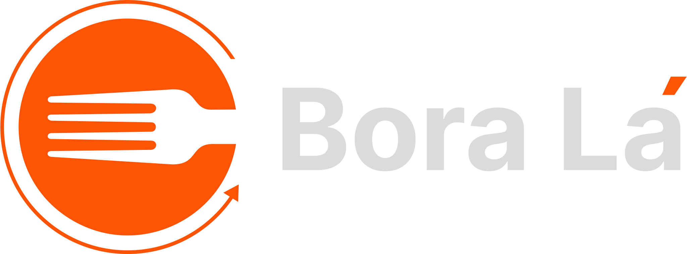

Rolê garantido
Escolha simplificada!
Bora Lá?
Sobre o Bora lá!
Elimine a indecisão com um clique!
O BoraLá nasceu para acabar com aquela eterna indecisão na hora de escolher onde comer. Seja com seu grupo de amigos ou sozinho, a nossa plataforma transforma o processo de escolha em algo simples, rápido e divertido.
Esqueça as longas pesquisas e análises intermináveis. Aqui, tudo o que você precisa fazer é apertar um botão e deixar o destino surpreender você!
O BoraLá prioriza a praticidade e a diversão, criando uma experiência interativa que combina leveza e espontaneidade.
BoraLá está em versão beta, a aplicação contém diversas lanchonetes da cidade de Pelotas/RS.
Em breve, mais funções e localizações
Bora Lá encontrar seu próximo destino favorito!
Desenvolvido por Tácio Würdig
Como usar o Bora Lá?
Clique no Botão Sortear
E deixe o Bora Lá decidir por você!
Curtiu o resultado?
Clique no nome da lancheria para saber mais e acessar o site ou instragram da lancheria
Caiu um lugar que você não curtiu?
Sem probremas! Clique de novo e descubra uma nova opção